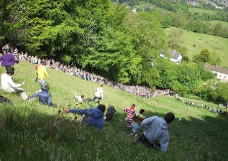

Home / Modern Heritage / Celtic and Atlantic Europe
Playable heritage gameCheese Rolling Hill
Also known as Cheese rolling
On one very steep grassy hill in Gloucestershire a round cheese is sent bouncing down the slope and a line of runners tumbles and scrambles after it. The cheese is quicker than anyone; the first person over the line at the bottom takes it home.


How to play
- On the start, tap the pad on the beat to get away fast.
- Then hold the side the slope bends toward: the gold marker shows the lean you need.
- Keep close behind the rolling cheese for points, stay on your feet over the tussocks and rough ground, and cross the bottom line first.
Rules at a glance
- Three downhill heats; your score is the average of the three.
- Your score counts your place, your rhythm and how long you stayed within reach of the cheese.
- The cheese rolls faster and faster down the slope and is never caught: it is a pace to chase.
- A tussock is cleared only when your lean has matched the slope as you reach it; rough ground shrinks the timing window.
About the tradition
Every spring bank holiday the people of Brockworth and visitors from many countries gather on Cooper's Hill, a slope of about 180 metres, for a race that has been held for generations. Winners are cheered, and the whole day is a village wake.
Origins
Usually placed in the era of Modern Heritage (1800 to today), although its exact origins are uncertain, within the cultural world of Celtic and Atlantic Europe.
Credits
- Game design: World Heritage Games (original)
- Photo: Dave Farrance, CC BY-SA 3.0, source on Wikimedia Commons
- Text: CC BY-SA 4.0, World Heritage Games.
Sources

Get the app
Cheese Rolling Hill is one of 18 sports and skill games in the Sports & Skill of the World app for iPhone, iPad and Android. Submitted to the App Store and Google Play; in review. Store links appear here the day it goes live. One app, many traditions, no account needed.
More games to play

Celtic knot weave
Ireland +1 · Crafts and makingPlay preview · in the Textile Crafts of the World app
Moraingy drum-and-strike duel
Madagascar · Wrestling and martial sportsPlay preview · in the Sports & Skill of the World app
Nordic Colourwork Knitting
United Kingdom +2 · Crafts and makingPlay preview · in the Textile Crafts of the World app
Tartan Sett Weaving
United Kingdom +1 · Crafts and makingPlay preview · in the Textile Crafts of the World app
Ribbon-Pole Plaiting Dance
United Kingdom +4 · DancesPlay preview · in the Music & Dance of the World app
Ring Tilting
Croatia · Dexterity and skill gamesPlay preview · in the Sports & Skill of the World app
More from United Kingdom

Antigua Classic Yacht Race
Antigua and Barbuda +1 · Racing
Bagatelle
France +1 · Dexterity and skill games
Bat and Trap
United Kingdom · Dexterity and skill games
Blacksmith's Forge
United Kingdom +4 · Crafts and making
Bridge Stick Race
United Kingdom · Toys